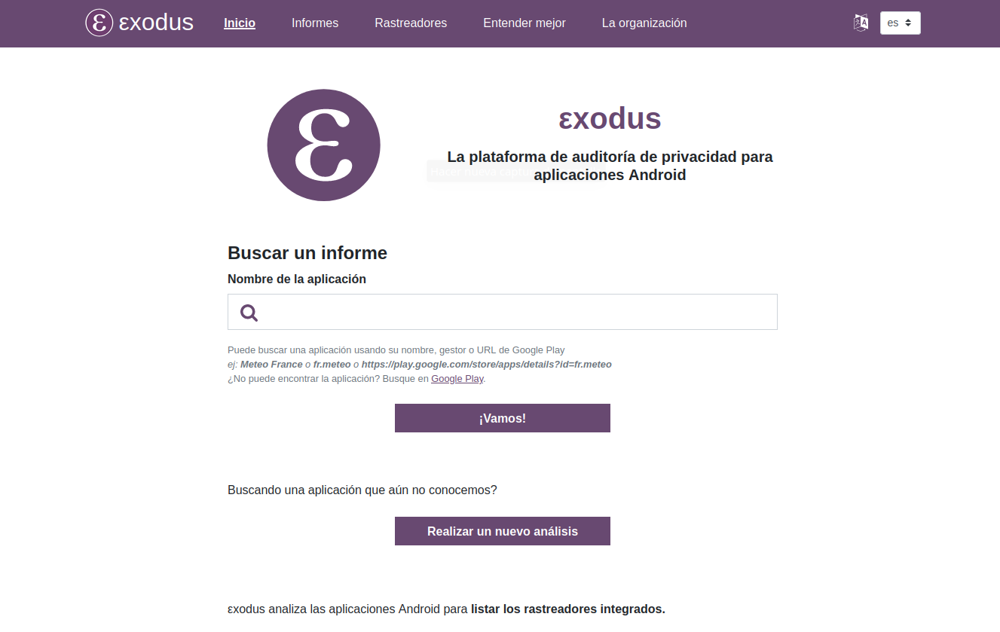

Identidad digital
¿Quién sos?
Te invitamos a realizar durante algunos minutos una experiencia de Egosurfing, es decir, búsquedas en internet sobre tu propia persona:
- tu propio nombre
- un nombre de usuario que usás frecuencia
- tu dirección de correo
¿Te animas a compartir algo de lo que has encontrado? ¿Se corresponde con lo que quisieras que se supiera públicamente sobre vos?
Identidad digital
Veamos qué nos explica al respecto el Ministerio de Justicia Argentino:
¿Qué es mi identidad digital?
La identidad digital es el conjunto de información sobre nosotros expuesta en internet y que forma una descripción nuestra en el plano digital.
¿Qué información conforma nuestra identidad digital?
La identidad digital se forma con distintos tipos de información:
- Datos que aparecen en nuestros perfiles sociales y profesionales (Facebook, LinkedIn, Instagram, YouTube, Twitter, etc.).
- Interacciones: comentarios, valoraciones y opiniones vertidos en foros, blogs, portales de información, redes sociales, etc.
- Contenidos digitales: fotos en redes sociales, videos, presentaciones o documentos publicados en la web, publicaciones que otros hacen sobre nosotros, blogs, etc.
- Contactos: amigos, contactos profesionales, seguidores y seguidos, direcciones de correo electrónico.
- Mensajería instantánea: WhatsApp, Telegram, Messenger.
¿Nuestra identidad digital es igual a nuestra reputación digital?
No, aunque ambas están relacionadas.
Nuestra identidad digital se define por los contenidos y acciones generados por nosotros en la red pero también por los que otros generan sobre nosotros. Es quienes somos.
Nuestra reputación en línea es la opinión que los usuarios de internet tienen sobre nosotros. Es una construcción subjetiva, hecha colectivamente y con una relevancia pública de la que se derivan efectos positivos o negativos. Es quién creen los demás que somos.
¿Por qué es importante gestionar nuestra identidad digital de manera responsable?
Aunque nuestra reputación en internet nunca estará totalmente bajo nuestro control, si gestionamos nuestra identidad digital de manera eficaz estaremos ayudando a construir una reputación en línea que se adapte más adecuadamente a nuestra identidad real.
El derecho a gestionar nuestra propia identidad digital con la información que nos represente está ampliamente reconocido. Nuestra identidad digital no puede ser controlada, manipulada o suplantada por terceros contra nuestra voluntad.
¿Cómo podemos gestionar nuestra identidad digital de manera eficaz?
Una correcta gestión de nuestra presencia en internet implica actuar sobre el contenido que generamos nosotros mismos, el generado por terceros y el que se crea en el marco de las relaciones con los demás.
Algunos consejos para una gestión eficaz:
- Observar las medidas básicas de seguridad y protección de nuestros datos personales en internet y ser conscientes del uso que se puede hacer de ellos.
- Configurar adecuadamente la privacidad de los sitios, aplicaciones y redes sociales que utilizamos (Facebook, TikTok, Discord, Instagram, WhatsApp, Twitch, X (ex Twitter), Snapchat, etc).
- Limitar la información sobre nosotros que subimos a las redes sociales.
- No utilizar redes wifi de acceso público o desprotegidas.
- Mantener el sistema operativo de nuestros dispositivos siempre actualizado.
- Asegurarse que lo que compartimos en internet no contenga información personal o sensible.
- Desconfiar de correos electrónicos o mensajes de contactos desconocidos que inviten a realizar alguna acción, como hacer clic, descargar algo o proporcionar información confidencial.
- Utilizar contraseñas seguras.
- Monitorear nuestro nombre en redes sociales para saber si alguien hace uso indebido de él.
- Ser cautos al etiquetar a nosotros o terceros en imágenes compartidas.
- Tener en cuenta que al sincronizar plataformas podemos alterar las condiciones de privacidad de las mismas.
- No dejar registros de nuestros datos a terceros y cerrar nuestras sesiones de correo, de redes sociales, de certificados, etc.
- Usar páginas con conexión cifrada para proteger la información que se comparte.
Internet no olvida
Internet no olvida, a veces cuando borramos algo es demasiado tarde. Los contenidos se copian y distribuyen muy fácil y podemos perder el control de hasta dónde pueden llegar. Por eso es necesario recordar que todo aquello que se publica en la Web deja de ser privado y puede permanecer allí por siempre.
Sharenting
¿Alcanza con cuidar lo que comparto?
Los permisos de las apps
Los permisos son derechos de acceso que una aplicación solicita para acceder en tu teléfono.
Pueden afectar a varias características o piezas de información, como el acceso a tu geolocalización, tus contactos, tus archivos, tu micrófono, función de vibración, cámara y demás. Los análisis de privacidad te permiten saber qué permisos se solicitan en cada aplicación.
Dependiendo de su smartphone y sistema operativo, es posible restringir algunos de estos permisos yendo a la configuración del teléfono.
¿Qué es un rastreador?
Un rastreador es una pieza de software cuya tarea es reunir información sobre la persona que utiliza determinada aplicación, sobre cómo lo usan, o sobre el smartphone en el que se está usando.
No todos los rastreadores tienen la misma función y pueden presentar diferentes niveles de intrusión de la privacidad.
- Informes de errores: estos rastreadores se especializan en reportar fallos en la aplicación. En otros términos, su objetivo es notificar a los desarrolladores de aplicaciones que una aplicación encontró un problema. Como tal, la información recopilada en el momento en que la aplicación se bloqueó permitirá al desarrollador corregir el error.
- Analítica: estos rastreadores están destinados a recopilar el uso de datos y permitir que el desarrollador tenga un mejor conocimiento de su audiencia (por ejemplo, para saber qué página visitó, o cuánto tiempo permaneció en un área determinada de la página).
- Perfil: el objetivo de estos rastreadores es reunir tanta información como sea posible sobre el usuario de la aplicación para construir un perfil virtual. A tal efecto, el rastreador se centrará, por ejemplo, en el historial de navegación, o en la lista de aplicaciones instaladas, etc.
- Identificación: estos rastreadores son responsables de determinar su identidad digital. Esta identidad puede referirse a una identidad oficial o a identificadores abstractos (seudónimo, etc.). El objetivo será, por ejemplo, poder correlacionar las actividades en línea y fuera de línea de un individuo.
- Anuncios: estos rastreadores tienen como objetivo identificar al usuario de la aplicación con el fin de servir anuncios dirigidos. Esto sólo es posible y relevante si el usuario ya tiene un perfil digital establecido. El objetivo del creador de un rastreador de este tipo es monetizar su aplicación, es decir, ganar dinero por medio de la publicidad.
- Ubicación: estos rastreadores están diseñados para determinar la ubicación geográfica del dispositivo móvil. Para ello, este tipo de rastreador se aprovecha de varios sensores: chips GPS, antenas celulares circundantes, redes Wi-Fi presentes en el área, puntos Bluetooth cercanos, o incluso sonidos específicos transmitidos por altavoces.
¿Cómo saber qué información personal recopilan las apps que estás usando?

Investiga cómo se comportan las apps que más usás en tu celular.

La compra-venta de nuestra personalidad
Las empresas que nos ofrecen sus servicios de forma gratuita, o a un coste muy por debajo de lo que realmente cuesta la tecnología implicada, han sido motivo de sospechas debido a los numerosos casos de tráfico de datos y su manipulación para conseguir fines no contemplados en las políticas de privacidad.
A continuación presentamos una pequeñísima recopilación de situaciones en las que se utilizan los datos de los usuarios de forma fraudulenta por parte de empresas de reconocido prestigio en Internet. En el caso de Facebook los escándalos se suceden periódicamente y van apareciendo nuevos datos que apuntan a infinidad de malas prácticas por parte de la empresa de Marc Zuckerberg que también es dueño de Instagram y WhatsApp. Comenzaremos haciendo mención al mayor escándalo llevado a cabo nada menos que por parte de los servicios secretos de Estados Unidos.
Caso Snowden, 2013
En 2013 un antiguo miembro de la Agencia de Seguridad Nacional de Estados Unidos (NSA), Edward Snowden, dio a conocer más de un millón de documentos de carácter secreto que revelaban que el gobierno norteamericano, junto a las agencias de espionaje de otros países, había creado una red de espionaje global a través de Internet. Esta red, utilizando los programas apropiados, era capaz de espiar conversaciones privadas, mensajes de correo electrónico e incluso la activación del audio y vídeo de los móviles y ordenadores sin que el usuario fuese consciente a base de la introducción de código malicioso en aplicaciones muy utilizadas como Google Maps o Angree Birds. La NSA también ha espiado los correos de Gmail o Hotmail. Gracias a todo esto la NSA es capaz de utilizar los correos, fotos, contactos, geolocalización y otros datos para hacer un perfil de cualquier persona que les interese. Según los datos proporcionados por Snowden cientos de empresas habrían también colaborado voluntariamente en este espionaje global. Entre las empresas que habrían facilitado el espionaje se encuentran: Google, Apple, Microsoft, Yahoo!, Facebook o Vodafone. El caso Snowden sigue abierto ya que después de huir de Estados Unidos permanece en Rusia, país que lo acogió y donde está desde entonces. La NSA y el resto de gobiernos, ¿siguen con su espionaje masivo? Dado que Snowden sigue en busca y captura y que niegan la veracidad de todo lo que salió a la luz es de esperar que todo siga igual. Recomendamos vivamente darle un vistazo al documento de Wikipedia "Revelaciones sobre la red de vigilancia mundial", que encontrarás en la sección Para saber más, y poder tener así una visión más exacta de hasta qué punto podemos estar controlados.
Cambridge Analytica, 2016
Fue tristemente conocido el caso de Cambridge Analytica donde esta empresa sobre minería de datos, en 2016, recopiló información a través de Facebook de 50 millones de usuarios con la finalidad de crear anuncios favorables a determinadas opciones políticas. Facebook fue conocedora de este hecho durante dos años sin hacer nada para proteger a sus usuarios. Cambridge Analytica fue acusada por manipular las decisiones de los votantes, aunque esta empresa no solo actuó de este modo en las elecciones presidenciales norteamericanas de 2016 sino que se dedicaba a este tipo de actividades como su modo de trabajo habitual. En palabras de uno de sus empleados: "Explotamos Facebook para acceder a millones de perfiles de usuarios. Y construimos modelos para explotar lo que sabíamos de ellos y apuntar a sus demonios internos. Esa era la base sobre la cual la compañía se fundó" (Cambridge Analytica).
Facebook, 2017
Siguiendo con Facebook, en 2017 se supo que había permitido el acceso a datos absolutamente privados de sus usuarios como los números de teléfono, amistades, publicaciones y fotos privadas a centenares de empresas como Microsoft, Netflix, Spotify, Amazon, Apple o Yahoo (Facebook permitió a Microsoft, Netflix y Amazon y otras 150 empresas acceder a datos personales como los mensajes privados y la información de contacto, según el NYT), algo que los usuarios desconocían totalmente y que carece de toda ética, aunque económicamente pueda ser muy lucrativo.
Google, Amazon, Facebook, Apple, 2019
También se ha sabido durante 2019 que Google, Amazon, Facebook y Apple (a veces apodados GAFA, por sus iniciales) escuchan las conversaciones privadas recogidas por sus respectivos asistentes inteligentes (Asistente de Google, Alexa de Amazon, Portal de Facebook y Siri de Apple). Además estas conversaciones eran monitorizadas por personal de las propias empresas y no por ordenadores. Según han explicado posteriormente por motivos relacionados con la calidad del servicio. Independientemente de la veracidad de estas afirmaciones la verdad es que en ninguna parte de los términos de servicio ni de la privacidad se habla de que las conversaciones puedan ser escuchadas por personas ajenas. Por lo tanto, es más que probable que los motivos que los impulsan a escuchar vayan más allá del mantenimiento de la calidad del producto.
Avast, 2019
En diciembre de 2019 saltó a la luz la recopilación de datos que la empresa antivirus Avast, dedicada a la seguridad en la Red, y que teóricamente protegía al usuario del mal uso de sus datos, estaba haciendo el software antivirus (gratuito, pero no libre) a través de sus extensiones en los navegadores Chrome y Firefox. La noticia fue inicialmente publicada en un blog sobre seguridad y parece que Avast ha estado recopilando información detallada de la actividad del usuario (al que identificaba de forma única entre todos los usuarios) para luego vender los hábitos de navegación a otras empresas. Después de haber reconocido la veracidad de los hechos Avast ha retirado sus extensiones y las ha sustituido por otras que ya no realizan esta práctica.
Debate
¿Cuál es nuestro rol como docentes en este tema? ¿Cuáles serán nuestras obligaciones éticas? ¿Cómo podemos cumplir con ellas? Intentá recordar anécdotas vividas o conocidas donde se vean representados alguno o todos los aspectos que hemos visto respecto de la identidad digital y sobre el derecho de los niños a que se respete y cuide su identidad digital
Para seguir profundizando
Obra publicada con Licencia Creative Commons Reconocimiento Compartir igual 4.0